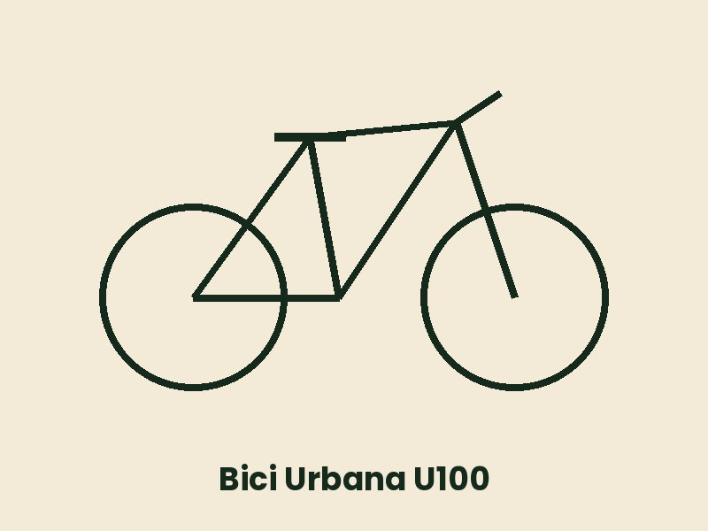

Qué bici llevar
Vale cualquier bici urbana o de montaña en buen estado. Si no tienes, puedes alquilar una en BiciRuta. El casco es obligatorio.
Ruta en bici · ASIR 1
La clase de ASIR 1 organiza una salida en bici por el parque del Retiro de Madrid, con el objetivo de disfrutar de un paseo en grupo y fomentar la actividad física. La ruta es apta para todos los niveles y se realizará en un ambiente seguro y controlado.

Vale cualquier bici urbana o de montaña en buen estado. Si no tienes, puedes alquilar una en BiciRuta. El casco es obligatorio.
| Punto de paso | Hora prevista | Distancia acumulada |
|---|---|---|
| Salida: puerta del instituto | 09:30 | 0 km |
| Entrada al parque del Retiro | 10:30 | 6 km |
| Parada para descansar | 11:15 | 10 km |
| Llegada: vuelta al instituto | 12:30 | 20 km |
| Horario y distancias aproximados. La salida se suspende si llueve. | ||